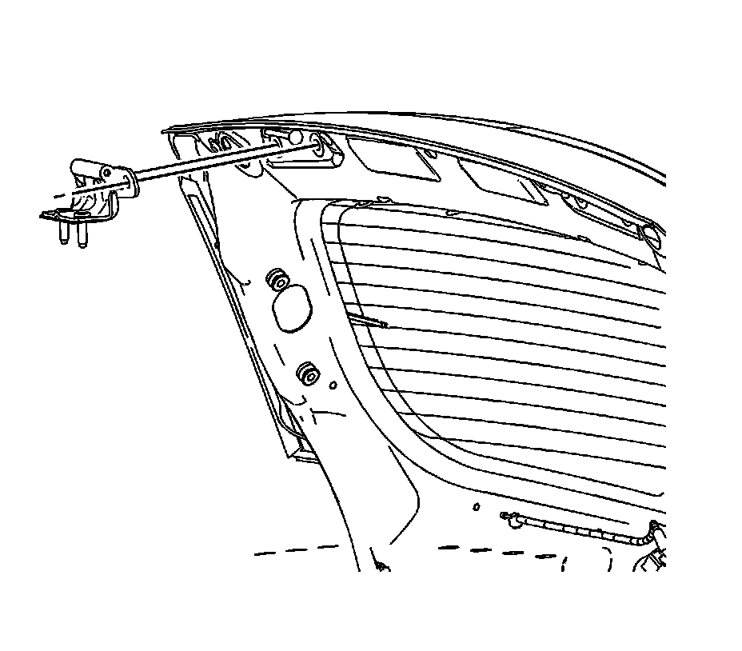

Trunk / Liftgate Hinge: Service and Repair
Liftgate Hinge Replacement
Removal Procedure
1. Open the liftgate.
2. Use a grease pencil to mark the location of the liftgate hinges.
3. Remove the grommet from the upper right corner of the vehicle body.
4. Disconnect the electrical connector and the washer hose.
5. Remove the grommet from the upper left corner of the vehicle body.
6. Disconnect the 2 electrical connectors.
7. Support the liftgate in the open position.
8. Remove the liftgate assist rods from the upper ball studs.
9. Open the access panel doors in the header trim panel.
10. Remove the nuts retaining the liftgate hinge to the vehicle.

11. With the aid of an assistant, remove the liftgate from the vehicle,
12. Remove the bolts retaining the hinges to the liftgate.
13. Remove the liftgate hinges from the liftgate.
Installation Procedure
1. Position the liftgate hinges to the location marks on vehicle.
Notice: Refer to Fastener Notice (Fastener Notice) .
2. Install the bolts that retain the liftgate hinges to the liftgate.
Tighten the liftgate hinge nuts to 25 N.m (18 lb ft).
3. With the aid of an assistant, install the liftgate to the liftgate.
4. Install the nuts that retain the liftgate hinge to the vehicle.
5. Close the access doors in the header trim panel.
6. Install the liftgate assist rods to the upper ball stud.
7. Remove the liftgate support.
8. Connect the two electrical connectors at the upper left corner of the vehicle body.
9. Install the grommet to the upper left corner of the vehicle body.
10. Connect the electrical connector and the washer hose at the upper right corner of the vehicle body.
11. Install the grommet to the upper right corner of the vehicle body.
12. Close the liftgate.